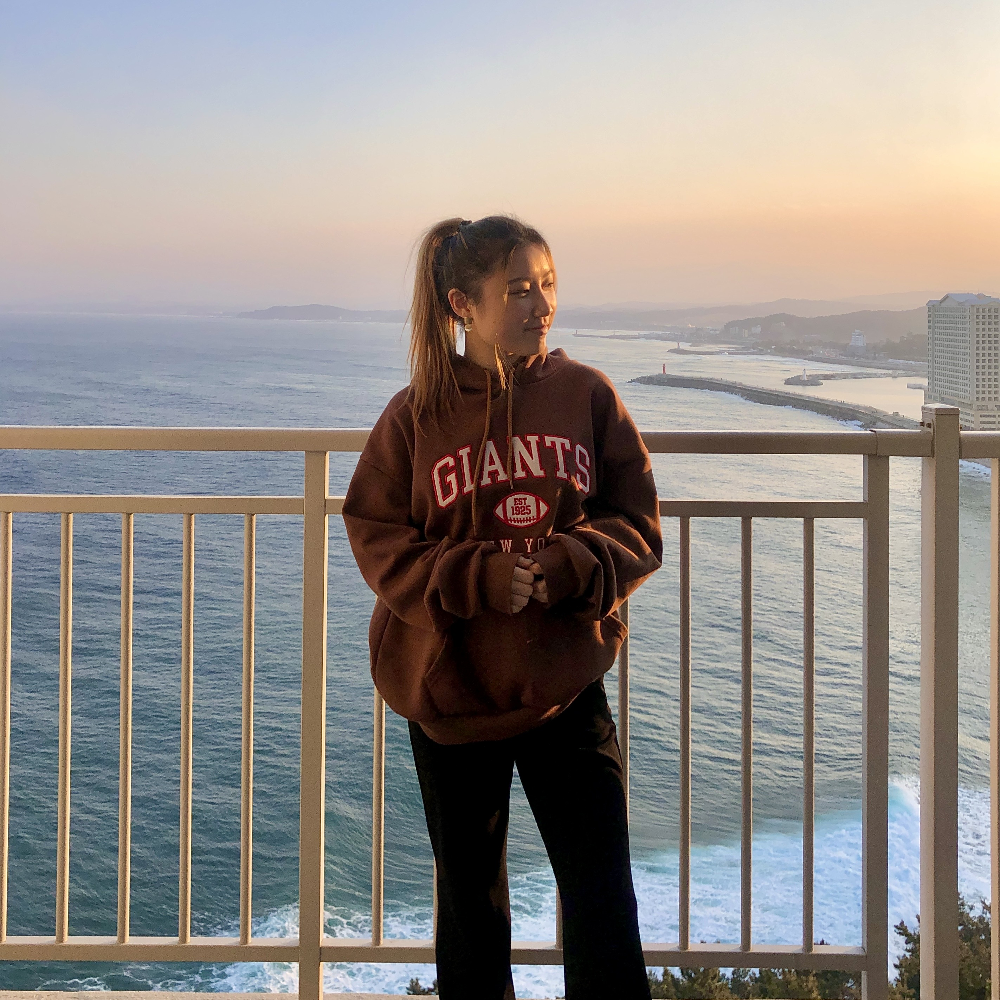

Sunny Park
Econ Major | 4th year
my name is sunny and i like to live laugh love. these are some of my fav places to eat in berk
- imm thai
- noodle dynasty
- chipotle

Chipotle
Reading Responses
- I began to learn about the different components that could be used to make an app. I also learned how to begin having an eye for details when I am looking at an app such as if timestaps are shown, things being bolded, etc.
- My favorite part about this article was how I was able to analyze the apps that I use everyday. I did not even realize the minor details that go into apps like Spotify and I am super interigued.
- "You develop your design eye by thinking as if you were the designer of a product."
- 9/10